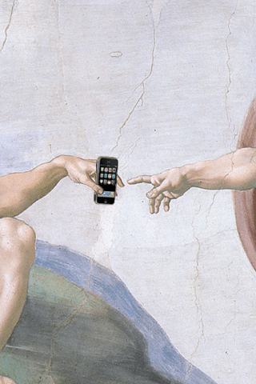

Никита Дубко, Яндекс
Никита Дубко, Яндекс
 iPhone of Adam by 2600ratДоверяйте данным,
а не внутренним ощущениям.
Стивен Хубер
| 🇷🇺 | Модель | |
|---|---|---|
| 1 | iPhone 7 | 6.76% |
| 2 | iPhone 6 | 4.22% |
| 3 | iPhone 6S | 3.90% |
| 4 | iPhone SE | 3.70% |
| 5 | iPhone X | 3.40% |
| 6 | iPhone 5S | 2.84% |
| 7 | iPhone 7 Plus | 2.51% |
| 8 | iPhone 8 | 2.47% |
| 9 | iPhone 8 Plus | 2.23% |
| 10 | Xiaomi Redmi Note 4 | 1.48% |
| 🇺🇸 | Модель | |
|---|---|---|
| 1 | iPhone 7 | 7.85% |
| 2 | iPhone 8 Plus | 7.67% |
| 3 | iPhone 8 | 6.59% |
| 4 | iPhone X | 6.04% |
| 5 | iPhone 7 Plus | 5.91% |
| 6 | iPhone XR | 5.06% |
| 7 | iPhone 6S | 4.23% |
| 8 | iPhone XS Max | 3.00% |
| 9 | Samsung Galaxy S8 | 2.98% |
| 10 | Samsung Galaxy S9 | 2.95% |
| Размер | 5.5 дюймов |
|---|---|
| Разрешение | 1080 x 1920 |
| ОС | Android 6.0.1 (Marshmallow) |
| CPU | Octa-core (4x1.5 GHz Cortex-A53) |
| GPU | Adreno 405 |
| Память | Внутрення 16GB, 2GB RAM |
| Батарея | Li-Ion 3000 mAh |
| Цена | 130 EUR |
 Пусть всем кажется, что всё грузится быстро /
Виктор
Русакович
Пусть всем кажется, что всё грузится быстро /
Виктор
Русакович

 Twitter: @smashingmag
Twitter: @smashingmag